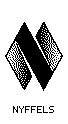
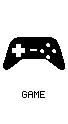

Je logo. En je gamemodus.
Het rechterscherm toont het Nyffels-logo tijdens normaal gebruik en een controller wanneer GAME actief is. Links blijft het bestaande scherm behouden.

Nyffels-logo · GAME uit
Wat verandert er?
Alleen de afbeelding op het rechterscherm wisselt. De bestaande batterij- en verbindingsstatus blijven zichtbaar.
Eenmaal samen indrukken: GAME aan.
Loslaten en opnieuw indrukken: GAME uit.

De afbeeldingen zijn de echte pixels voor de firmware, hier vergroot weergegeven. De statusbalk erboven is schematisch; 85% is een voorbeeldwaarde. Het scherm heeft alleen zwart en wit, daarom zijn de lichte vlakken van het logo met een stippenpatroon weergegeven.
De knoppen op deze pagina simuleren de weergave. Ze bedienen je toetsenbord niet.
Later aanpassen en bouwen
- Origineel logo: assets/display/nyffels-logo.png.
- Controller: vectorvoorbeeld; de vorm wordt gegenereerd door
make_controller()in het onderstaande script. - Maak de zwart-witbeelden opnieuw met
python scripts/generate_display_art.py(Pillow vereist). - De bijbehorende C-afbeeldingen staan in
src/display_art_images.c. - De actieve GAME-laag (index 3) wordt vanuit de linkerhelft via de bestaande splitverbinding doorgegeven. Na opnieuw verbinden wordt de toestand opnieuw verzonden.
- Flash beide Sofle-helften met dezelfde nieuwe build. Studio is niet nodig.


De schermmodule vervangt alleen GEMs rechter afbeeldingsfunctie. De linkerschermcode, toetsindeling en Bluetooth-koppelingen blijven behouden.